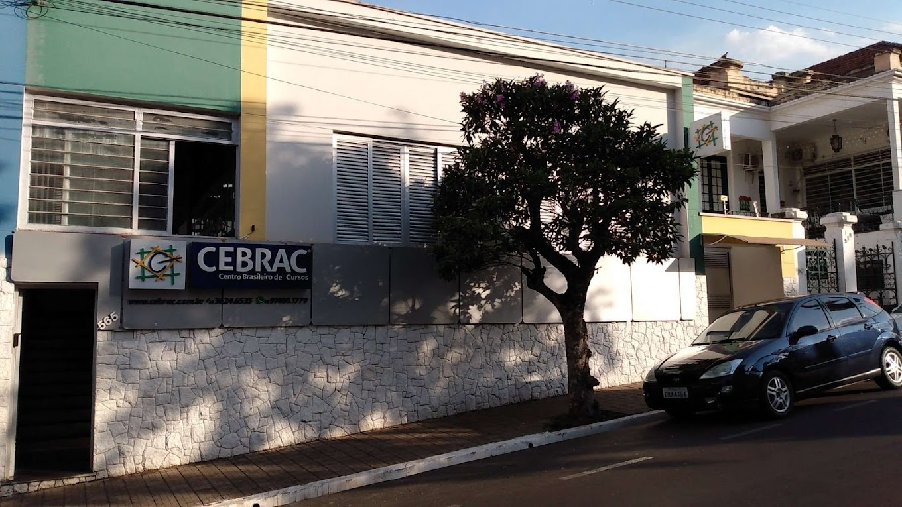

Sobre Mim
"Muito prazer, sou o Leandro! Aos 19 anos, transformei minha curiosidade por computadores no meu plano de carreira. Hoje estou graduando em Desenvolvimento de Software na FATEC, mas minha bagagem começou a ser construída antes: passei pelas áreas de Informática e Rotinas Administrativas, onde o meu esforço me garantiu o reconhecimento como aluno destaque — marca que carrego desde a época em que terminei o ensino médio. Tenho uma meta clara: não ser apenas mais um no mercado, mas sim um especialista completo. Trabalho duro para entender o computador de ponta a ponta. Seja abrindo a máquina para montar e consertar o hardware, ou abrindo o editor de código para programar sistemas eficientes, meu foco é a excelência total na tecnologia.".
Habilidades
Estudos

Curso / informatica - rotinas adm
Status: Concluído
📍 Localização:Jaú - SP. Rua Edgard Ferraz, 565.(Presencial)
aqui foi onde tive que aprender a conviver com pessoas diferentes por curto tempo e se comunicar - aprendi a usar o pacote office e canva ja nas rotinas adm eu aprendi adiministrar dinheiro e tempo.

escola / ensino médio e fundamental
Status: Concluído
📍 Localização:Av. Zezinho Magalhães, Jaú, São Paulo (presencial/oline)
escola onde tive os conhecimentos basicos e onde eu começei a gostar de progamação.

Curso superior / DSM
Status: cursando
📍 Localização:R. Frei Galvão - Jardim Pedro Ometto, Jaú - SP (Presencial)
onde eu estou aprendendo mais profundamente
Projetos
Humos
sistema onde tenho participação/trabalho institucional.
Academia Bob Fit
Em deselvolvimento mas com grande potencial
ping-pong
jogo que eu fiz com ajuda dos meus professores da escola enquanto eu estudava ainda .
Contato
Vamos trabalhar juntos? Entre em contato por e-mail ou me chame direto nas redes sociais.